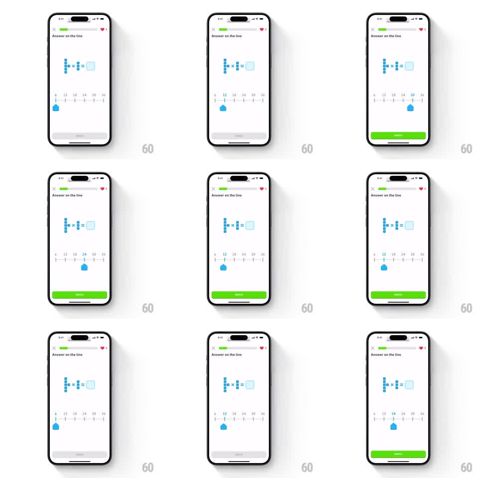

Media
Frame-by-frame

Rebuild this interaction 1:1: Duolingo Math's "Answer on the line" quiz - the learner drags a teardrop handle along a horizontal number line to place the answer to a multiplication problem, and the CHECK button flips from disabled gray to bright green the moment a value is selected.

Rebuild this interaction 1:1: Duolingo Math's "Answer on the line" quiz - the learner drags a teardrop handle along a horizontal number line to place the answer to a multiplication problem, and the CHECK button flips from disabled gray to bright green the moment a value is selected. ## Integration Integration: stack-agnostic spec - springs given as stiffness/damping, timed motions as duration + curve; map every value to your framework and animation library of choice. ## Scene Quiz screen, white background. Top bar: X close button, green segmented progress bar, heart counter. Title "Answer on the line". Center: equation built from dotted unit blocks (stacked dot columns) with a rounded-square answer slot. Lower third: horizontal number line from 6 to 36 in steps of 6, small tick labels. Blue teardrop handle (map-pin shape, point down) rests on the line. Bottom: full-width CHECK button, disabled gray. ## Motion spec Pattern: drag-to-answer number line slider. - The handle tracks the finger 1:1 horizontally, clamped to the line's extents. - On release the handle snaps to the nearest tick: spring stiffness ~300, damping ~22, settling in ~300ms with one small overshoot. - While dragging, the handle lifts slightly (scale 1.0 to 1.15 over 100ms) and casts a soft shadow; it settles back on release. - The first snap to any value enables CHECK: gray to Duolingo green (#58CC02) over 150ms, no other change. - The answer slot in the equation fills with the selected value on snap, fading in over 150ms. ## Calibration - Snap spring must overshoot noticeably - this is a playful kids' surface, not a utility slider. - Keep tick hit targets wide: snap radius of half a step so the line always resolves to a labeled value. ## Reduced motion Handle moves with the finger and snaps without spring overshoot (linear 100ms); button color change is instant. ## Don't miss - The handle is a pin/teardrop, not a round thumb - the point touches the line. - CHECK stays visibly disabled until the first snap; dragging without releasing does not enable it.